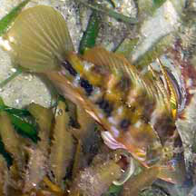
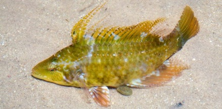
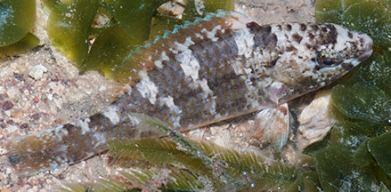
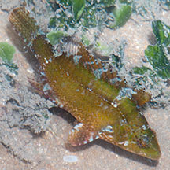
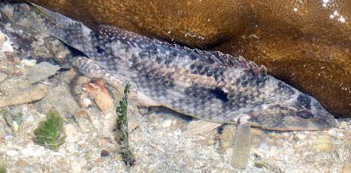
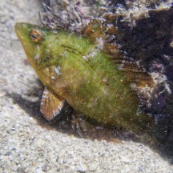
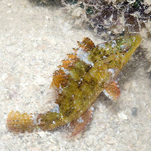
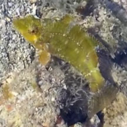

|
|
| fishes text index | photo index |
| Phylum Chordata > Subphylum Vertebrate > fishes > Family Labridae |
| Weedy
wrasse Pteragogus sp.* Family Labridae updated Sep 2020 Where seen? This lively fish is seldom seen. Once seen swimming actively among seagrasses, another near coral rubble. It might be quite common but overlooked because of its superb camouflage. Features: To about 20cm, those seen 6-15cm. Typical fish shape with large scales. It has a protrusible mouth. Most species are sand burrowers, feeding on creatures that live on the sea bottom. Most species change color and sex as they grow bigger. |
 Cyrene, Apr 07 |
 St. John's Island, Apr 12 Photo shared by Marcus Ng on facebook |
 Beting Bronok, Jun 10 |
 Tuas, Apr 08 |
|
*Species are difficult to positively identify without closer examination.
On this website, they are grouped by external features for convenience of display.
| Weedy wrasses on Singapore shores |
On wildsingapore
flickr
|
| Other sightings on Singapore shores |
 Chek Jawa, Jun 23 Photo shared by Loh Kok Sheng on facebook. |
 Pulau Hantu, Jun 24 Photo shared by Richard Kuah on facebook. |
 Flagfin wrasse Pteragogus flagellifer Terumbu Semakau, Jul 14 Photo shared by Marcus Ng on facebook. |
 Terumbu Semakau, May 23 Photo shared by Kevlin Yong on facebook. |
| Pteragogus
species recorded for Singapore from Wee Y.C. and Peter K. L. Ng. 1994. A First Look at Biodiversity in Singapore. *from Lim, Kelvin K. P. & Jeffrey K. Y. Low, 1998. A Guide to the Common Marine Fishes of Singapore. ^from WORMS +Other additions (Singapore Biodiversity Record, etc)
|
Links
References
|